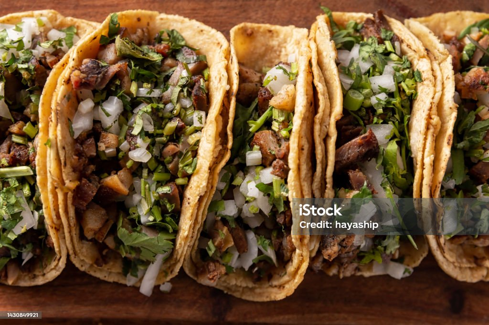

HomePage

Today we are going to make Tacos (specifically beef)! This is one of my personal favorites, going to Angels Tacos for a fellowship night in KCM, or just having it late at night with a good group of friends. So, let's see how to replicate that feeling right in the comfort of your home!
Ingredients
- 2 lb ground beef
- 1 chopped onion
- 2 TBSP minced garlic
- 1 tsp each of salt and pepper
- 1 tsp each of salt and pepper
- 1/2 tsp cayenne
- 4 tsp chili powder
- 2 tsp each of cumin and dried cilantro
- 1 1/2 cups of beef broth
- White corn tortillas
- 1 tbsp oil
- Shredded Monterey Jack cheese
- Taco Toppings
- Taco Toppings (sour cream, taco sauce, Pico de Gallo, shredded lettuce)
(original recipe source: Beef Tacos)
Steps
- Add ALL those ingredients together
- Boom, beef tacos